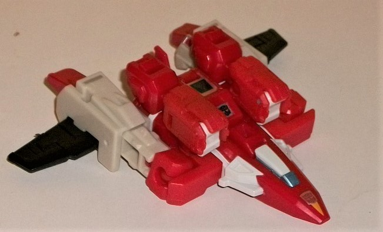
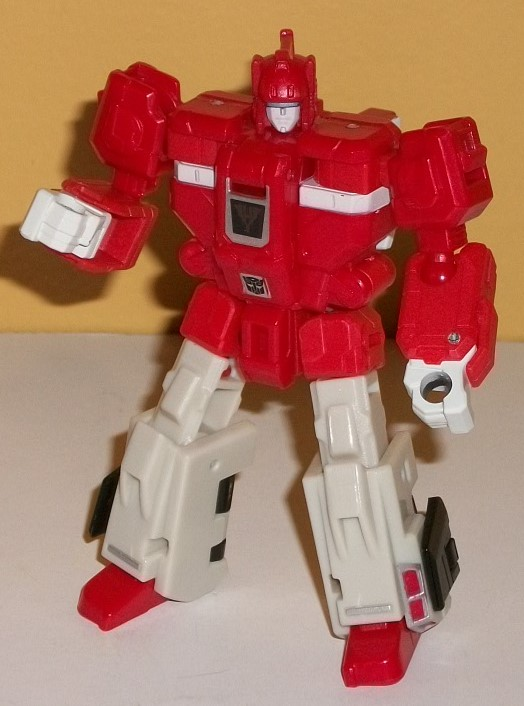
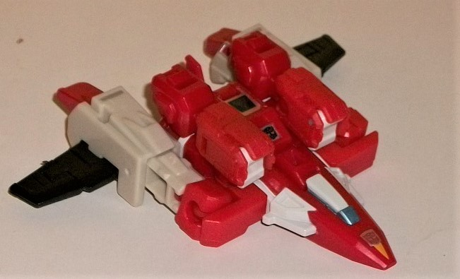
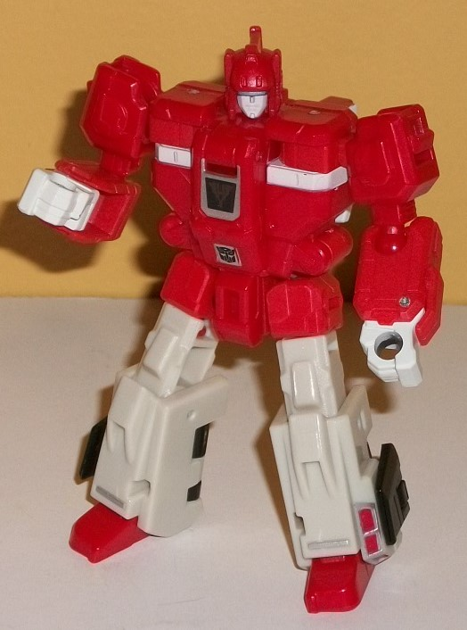
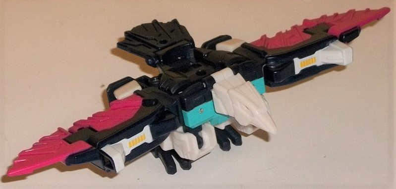
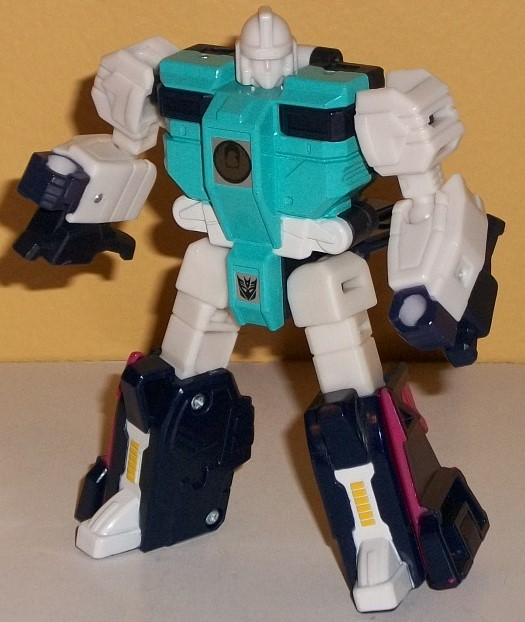

 
Allegiance : Autobot
Size : Legend
Difficulty of Transformation : Easy
Color Scheme : Moderately dark milky red, brownish off-white, and some black, light metallic silvery blue, light orange, and silver
Individual Rating : 6.2
Set Price
: $18 (U.S.)
Overall Rating:
7.1
(NOTE: Because this set is composed of repaints,
this is not a full-blown review. This mainly covers any changes made to
the individual toys and their color schemes, and merely compares them to
the original releases of these molds. For a review on Titans Return Fastclash--
the mold used for Cloudraker-- go
here
.
For a review on Titans Return Pounce-- the mold used for Wingspan-- go
here
.
)
 Cloudraker
Cloudraker


Allegiance
: Autobot
Size
: Legend
Difficulty of Transformation
: Easy
Color Scheme
: Moderately dark milky
red, brownish off-white, and some black, light metallic silvery blue, light
orange, and silver
Individual Rating
: 6.2
Since Fastclash and Cloudraker
are clones, the whole idea is to make their robot modes as identical as
possible-- thus, I'm not going to have much to say about Cloudraker's robot
mode. Most of the same parts are used, as well as the same general color
breakup, for the "core" robot parts-- including the head. The only difference
has to do with how the extras are "stored" in this mode. The only real
obvious extra here is that Cloudraker has a little tailfin sticking out
of the back of his head. The cockpit fits firmly against his back and mostly
out-of-sight in this mode, and his wings are folded around the bottom area
of his lower legs. Given that Fastclash has considerably more obvious kibble--
wheels on the lower legs, wheels and the whole spoiler on the upper back--
Cloudraker definitely wins in this area. Because of the lack of wheels,
the black visible in this mode is definitely less than on Fastclash, and
is mostly just visible on the wing pieces on the back of his lower legs
and then on his chest, where his logo is a simplified image of his futuristic
jet mode, giving you another clue as to what this Clone's alt mode is.
Beyond what I've already mentioned, the red/brownish off-white color scheme
is the same here as on Fastclash, as are the paint apps. The articulation
is the same as on Fastclash, as well.
Cloudraker's transformation
is a bit more complicated than Fastclash's-- the legs split apart at the
waist entirely and angle up to the sides of the upper back, folding out
the wings and the feet. The arms fold up to the front like Fastclash's,
while the robot head turns around to make the tailfin more apparent. The
cockpit on the back folds down and threads through the now-open waist to
peg into the front. This is certainly a better alt mode than Fastclash's
incredibly weak "race car" mode, but it still definitely has some issues,
and it's a bit too obvious most of this is a "robot mode in yoga position"
transformation. The wings on the sides are way too small proportionally,
and although the feet are small, they just kinda stick there out the back
end without looking like thrusters or anything. The arms are both obvious
extras, even with the fists folded in-- not much more to say there. The
legs help add some bulk to the sides of the body, but it's a bit TOO wide--
it's really weird-looking to have this sleek-looking, triangular cockpit,
then all of a sudden, BAM, the toy becomes more than twice as wide. The
hip balljoints are also exposed on the front of the sides, as well. The
tailfin on the back end is a nice minor touch, but doesn't help much. There's
also a fold-out landing gear piece underneath the cockpit, but there's
nothing else to keep the rest of the toy level with the extended landing
gear, so it doesn't really do its job. The mold detailing on the new parts
is pretty decent, with little vents and a cockpit molded into the front
nosecone, while there's some basic lines on the wings. The paint detailing
really shines on the nosecone, with white along the sides and top of the
cockpit, with a small metallic silvery blue window, an Autobot symbol near
the front, and a small orange triangle even nearer to the front. The small
cockpit halves on the back ends are definitely meant for Fastclash, as
their positioning in halves back there doesn't really make sense in this
mode-- I'm surprised they were painted, honestly. The colors are broken
up pretty well in this mode overall, with the red and brownish-white spread
fairly nicely throughout the toy-- with the black wings excepted, of course.
As with Fastclash, you can flip up the middle flap on Cloudraker's body
to give a Titan/Prime Master figure a seat in this mode.
*This toy was also released as a 2-pack with Fastclash as part of the Amazon-exclusive Earthrise "Biosfera Galactic Odyssey" set, but it's basically identical to this release except for a silver cockpit window. Fastclash himself looks absolutely identical to his original release, at least as far as I can see.
 Wingspan
Wingspan


Allegiance
: Autobot
Size
: Legend
Difficulty of Transformation
: Easy
Color Scheme
: White, very dark purplish
blue, moderately light teal, and some fuchsia, yellow, and orange
Individual Rating
: 8.0 (original);
8.1 (Earthrise version)*
Again, as with Cloudraker,
Wingspan's robot mode is meant to be as close to his clone Pounce's as
possible. The only difference is a couple of beast mode extras you can
see in this mode. The most obvious are the talons below the lower arms.
The fuchsia on the wings also stucks out a bit as they're folded against
the lower legs. On the backside, you can see the tailfins lifted up behind
the waist, and the bird neck & head behind the back. Paint-wise, the
color layout is pretty much the same as on Pounce, with white arms and
upper legs, a teal main body, and some dark purplish blue on the lower
legs, hands, and back. The sigil on the center of the chest is of a bird
to help differentate him more from Pounce. So overall, in this mode Wingspan
has some more obvious kibble on the lower arms, whereas Pounce has more
obvious stuff coming out of the back. Wingspan has the same articulation
in this mode that Pounce has.
To transform Wingspan,
split the waist out and flip down the wing panels while folding the arms
forward and down to form the legs. Then flip down the tailfeather piece,
flip up the bird head over the robot head, and fold out some parts of the
side of the robot body to form some connector pieces to connect the lower
legs up near the shoulders to complete the wings. The end result is pretty
darned good-- especially when the robot mode is given priority-- and overall,
Wingspan definitely has the best alt mode out of any of the clones. The
main body is pretty nice and proportional, with angular robotic tailfin
details on the back and long wings-- they're a bit small proportionally,
and flat, but considering the circumstances they still look pretty good.
They do have some nice "metal shard"-like detailing, though the lower legs
are pretty obvious below the inner half or so of each wing, and the upper
leg and waist bit are pretty obvious behind each wing. These legs are definitely
the most obvious extras and the worst part of this mode. The robot arms
form pretty good bird legs, even if they protrude a bit too far up on the
bottom of the main body, with the ball joints exposed. The robot hands
are definitely there on the back end of the feet, but they're pretty minor
extras, overall. The bird head is pretty solid, with some relatively basic
robotic bird details like the beak and general head shape with orange eyes.
Unfortunately, the mouth can't move. Because so much of the chest is hidden
in this mode, Wingspan's overall color scheme becomes a bit darker in this
mode, with the dark blue much more apparent in this mode, though the fuchsia
on the wings and the white helps to counterbalance it all; overall, it's
still a pretty good color scheme, here. For articulation in this mode,
Wingspan can move at the hips, knees, VERY slightly at the ankles, at the
tailfeathers, and at the mid-point up-and-down on each wing. (Unfortunately,
due to the transformation, he can't flap his wings normally-- his legs
are connected to his main body there without any room for movement.) There
is a seat for a Titan/Prime Master on Wingspan's back.
*Wingspan was also released in a 2-pack with Pounce as a Target Exclusive Earthrise release for $25 U.S. The two toys are mostly the same, with some minor color differences. The most obvious changes for the Earthrise version are the purple wings in beast mode, as opposed to fuchsia. There's also red eyes in both modes; a silver-painted face in robot mode; and a bit more visible teal. Overall I think the Target Exclusive release is SLIGHTLY better in terms of the color scheme, but they're both so similar I can't really recommend one substantially over the other.
This set of clones may
not satisfy those who want both of both molds, but in terms of the set
itself, this has the better of each of the clone molds. Wingspan is a bit
better than Pounce, and Cloudraker is definitely better than Fastclash
(though the Autobot clone mold is still definitely inferior to the Decepticon
clone mold). Whether you just want these two or want to hunt down the others,
I'd give this set a mild recommendation, keeping in mind the alt modes
are definitely compromised in favor of the robot modes for both of them.
Reviews by Beastbot